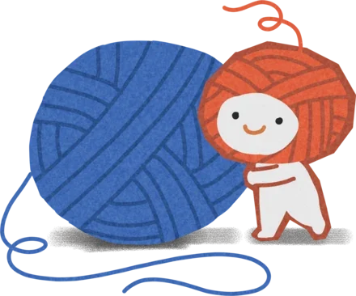
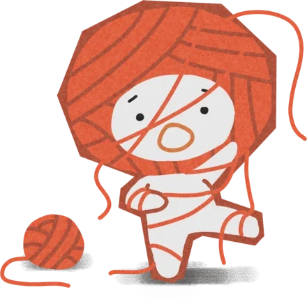
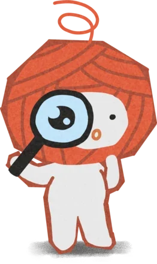
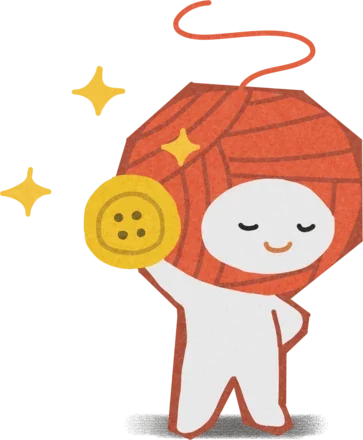

You are not what you fill out on a questionnaire. So the product is not allowed to ask you anything.
Refuse to ask a single question and the only evidence left is what somebody does.
You are not your LinkedIn bio and you are not your Hinge profile, and nearly every system built to understand you opens by asking you to be one of those things. Trove drops you into a short story with no clean answer and reads what you actually do.
Lovely on a homepage. Unreasonable in a codebase. I joined as hire number one on this iteration with the idea proven exactly once, as a Valentine’s drop in February, and eighteen weeks to build the machine underneath it. Eight routes. Sixteen components. A profile that existed as a mockup. No writers’ room and no animators.
A whole first session: everything before the game, the game itself at four times speed, and the personality read that follows. It opens by telling you it starts with what you do, offers a self-description step where every field has an “I don’t know yet”, and asks you to make an account only after it has already told you something about yourself.
Which means a real dilemma, every day, forever. Trove writes its stories, which it calls tangles, with language models and has another one judge them. The judge I inherited scored ten qualities, then threw nearly all of that away to answer one question: good enough to publish, yes or no. A story that merely clears not broken contains no dilemma, and a fake dilemma reveals nothing about the person playing it. Nothing could go up, only through, which means the promise quietly stops being true and you are running a quiz with nicer typography.
So I built a score out of what we were already throwing away, weighted toward a story’s weakest moment and whether two people playing it actually ended up somewhere different.
The pipeline that produces one is the most complicated thing I worked on. A premise and a category go in. What comes out has already been played start to finish by a cast of invented players inside the real product, every playthrough read back, and fixed automatically a limited number of times before a person sees a word of it. Most come out playable on the first pass.
A premise goes in
One line of intent and a category. That is the entire human input at this end.

It gets played, for real
A cast of invented players plays it start to finish inside the real product, not a rehearsal of it.

Every playthrough is read back
Every playthrough gets read back. The weakest moment decides the story’s fate, because it is the part a writer can actually fix.

A person still says yes
Passing means it works. It does not mean it is good, so nothing reaches a player unsigned.

Two and three loop on a cap: a revised draft is played again before it can move forward. Then somebody makes choices nobody asked them to explain, those choices become a read, the read moves their trait scores, and the profile sharpens every seventh day you play.
The same instinct killed a feature. “Stories that do not repeat themselves” was on the roadmap and all of us believed it, so I measured first: 139 tangles, 950 pairs of real player prose, one genuine duplicate. The best thing I shipped that quarter is a thing I removed.